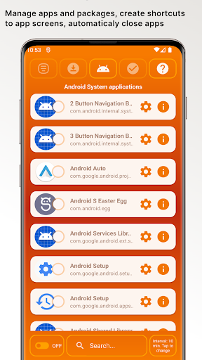
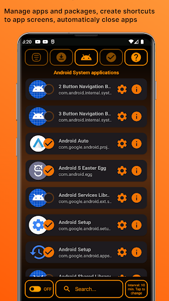
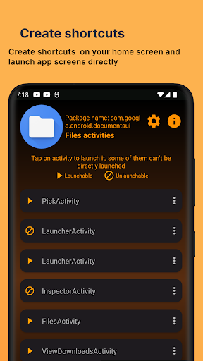

1. The Silent Drain: Why Background Apps Eat Your Battery
Have you ever picked up your Android phone after leaving it in your pocket or nightstand, only to find that 15% or 20% of the battery mysteriously disappeared? Or noticed stuttering animations and app lag even though you only have one app open on screen?
In 95% of cases, the culprit is not hardware degradation—it is uncontrolled background processes. When you purchase an Android phone from major manufacturers (like Samsung, Xiaomi, Motorola, or carrier-branded devices), the system arrives stuffed with 40 to 80 preinstalled applications:
- Manufacturer duplicate apps (redundant cloud sync tools, proprietary app stores, companion daemons).
- Carrier diagnostic and telemetry services running persistent socket connections.
- Aggressive third-party apps (social networks, shopping apps, games) that register persistent background alarms and wake-locks to harvest telemetry or push advertising notifications.
Because these apps register listeners for everyday system events (such as switching from mobile data to Wi-Fi, airplane mode toggle, or rebooting), Android repeatedly wakes them up, spins up the CPU, and pollutes your RAM.
When you go to Settings > Apps for preinstalled bloatware, the "Uninstall" button is deliberately greyed out or completely missing. Manufacturers lock these packages to prevent users from removing them through the basic user interface.
2. Why ADB Debloating is Risky for Normal Users
If you browse tech forums or Reddit, tech enthusiasts often recommend connecting your phone to a computer via USB and executing Android Debug Bridge (ADB) commands such as:
adb shell pm uninstall -k --user 0 com.samsung.android.bixby.service
While this technically strips the package from the active user profile, it introduces significant risks:
- System Bootloops: If you accidentally remove a package that another critical system service depends on (such as an OEM security framework, telephony provider, or package installer), your device can freeze during boot.
- Broken Over-the-Air (OTA) Updates: Many modern Android builds verify partition checksums before applying monthly security patches. Missing packages can cause updates to fail repeatedly.
- Loss of Core Features: Disabling the wrong system component can cause the stock camera app to crash, disable Wi-Fi calling, or prevent Bluetooth audio codecs from loading.
3. The Fallacy of Old-School "Task Killers"
Back in Android 4.0 and 5.0, millions of users downloaded "RAM Boosters" and "1-Tap Task Killers." However, on modern Android (Android 12, 13, 14, 15+), traditional task killers actually worsen battery drain.
When a generic task killer abruptly kills a process via raw Linux signals, Android's process supervisor recognizes that a registered background service died unexpectedly. The system immediately schedules a restart, spiking CPU clock frequencies and burning double the power!
4. A Smarter Solution: How App Stopper Works
The safest, most elegant strategy is not to mutilate the operating system with command-line hacks, nor to trigger aggressive process-killing loops. Instead, you need a utility that periodically puts misbehaving apps into a graceful stopped state.
This is the exact philosophy behind App Stopper by GiantTurtle Studio.

App Stopper for Android
Stop unwanted background apps and bloatware without root or ADB. Save battery, free RAM, and inspect mysterious packages with ease.
App Stopper lets you select apps that you only want active when you explicitly open them. During the rest of the day, App Stopper ensures those apps stay dormant:
- Zero Risk of Bricking: Because nothing is uninstalled or permanently modified, system integrity remains 100% pristine.
- Safe Experimentation: You can experiment with stopping candidate apps one by one. If an app you stopped turns out to be something you use, simply deselect it—no restoring firmware required!
- Transparent Indicator: App Stopper runs an unobtrusive notification whenever its background management is engaged, giving you complete visibility into what is running on your phone.
5. Step-by-Step: Reclaiming Battery and RAM
Here is how to set up a clean, high-performance Android device in under two minutes:
Install App Stopper from Google Play
Download App Stopper from the Google Play Store. The app is free, lightweight, and requires zero invasive internet permissions.
Select Apps to Stop
Open the app to browse the full list of installed and system applications. Check the apps you rarely use or that are notorious for battery drain (e.g. preinstalled carrier portals, social media background checkers, heavy games).
Keep Critical Apps Whitelisted
Leave your alarm clock, critical banking verifiers, and real-time messaging apps (WhatsApp, Signal, Slack) unselected so you never miss an urgent message.
Enable Automatic Background Stopping
Turn on the automatic schedule. App Stopper will ensure that whenever you finish using an app, it goes quiet in the background instead of continuing to spin CPU threads.



6. Bonus Powers: Direct Activity Shortcuts & Package Lookups
Beyond managing background memory, App Stopper includes two power-user features that streamline daily Android usage:
1. Create Deep-Link Home Screen Shortcuts
Have you ever wished you could open your phone's Wi-Fi settings, internal Android file manager, or battery usage chart with one tap from your home screen instead of clicking through five Settings menus?
App Stopper can inspect individual app sub-activities and create direct home screen shortcut icons. You can even bypass annoying launch splash screens on heavy apps to get right to the action!
2. Instant Package Name Copy & Web Search
Found an obscure process running on your device like com.qualcomm.qti.optinoverlay or com.sec.android.app.bluetoothtest? Instead of typing long alphanumeric strings into Google, App Stopper lets you copy the exact package name with one tap so you can immediately research its function and decide whether to stop it.
After configuring App Stopper, charge your phone to 100% and test your overnight standby battery drain. Most users see overnight standby drain drop from 12-18% down to just 2-4%, effectively extending total daily battery life by several hours!
7. Comparison: ADB vs. Task Killers vs. App Stopper
| Feature | ADB Terminal Commands | Old-School Task Killers | App Stopper |
|---|---|---|---|
| Safety / Risk of Bootloop | High (Can brick OS) | Moderate (Aggressive restarts) | 100% Safe (No bricking) |
| Computer Required? | Yes (PC + USB Cable) | No | No (On-device standalone) |
| Root Access Needed? | No (Requires USB Debugging) | No | No (Zero root required) |
| Reversible? | Requires reinstall scripts | N/A | Instant 1-tap toggle |
| Home Screen Activity Shortcuts | None | None | Built-in Shortcut Creator |
8. Frequently Asked Questions
Swiping an app away in your recent apps overview does not necessarily terminate its background services. Android apps register broadcast receivers and scheduled jobs that trigger automatically on system events like network changes or timers.
Yes. Removing system packages with commands like pm uninstall can break hidden dependencies, resulting in bootloops, inability to install OTA security updates, or crashes in fundamental phone features.
No, because you are in full control. You choose exactly which apps are managed. Keep your messaging tools, alarm clocks, and email sync unselected while selecting bloatware and resource-heavy games.
No. GiantTurtle Studio prioritizes user privacy. App Stopper does not upload your personal data, app list, or tracking information to third-party ad networks.
Enjoy a Fast, Cooler, and Longer-Lasting Phone
You don't need a computer science degree, terminal commands, or dangerous root hacks to make your Android phone run smoothly. Take control of your background apps today with App Stopper.
Get App Stopper on Google Play
Free to download. Compatible with Samsung Galaxy, Google Pixel, Xiaomi, Motorola, and all modern Android devices.